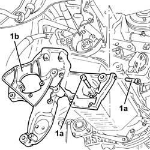
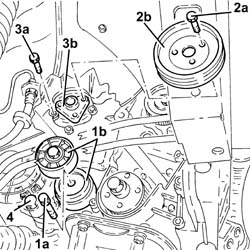
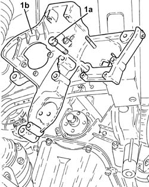
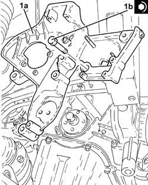
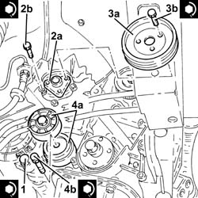

4130B32 power steering pump mount - r r
- Path
- Procedures > 41 STEERING > 4130 POWER ASSISTED STEERING > 4130B power steering hydraulic sytem > 4130B32 power steering pump mount - r r
- Kind
- repair procedure (removal / refitting; the operation number is the code)
- Applies to
- engines: 1.6 TS, 2.0 TS, 1.9 JTD 8V, 1.9 JTD 16V; all production periods
- Interactive page
- https://sloeber94.github.io/elrnDB-a147/en/#/3025297
Applies to: engines: 1.6 TS; all production periods
 Removing
Removing
 Refitting
RefittingProceed with the removal 4450B10 Front WHEEL (one) - R.R. (Right side).
Proceed with the removal 7055B64 Engine compartment DUST shield in front wheel arch (one), left or right - R.R. (Right side).
Proceed with removal 1016A40 ignition coil cover on cylinder head- r+r .
Proceed with removal 1008C10 power unit upper reaction link r r .
Proceed with removal 5510C14 ignition coil/s - r+r .
Proceed with removal 1016A20 single cam cover - r + r and replace gasket .
Proceed with removal 1092G10 single engine belt r r .
Proceed with removal 1092A10 Crankshaft services PULLEY - R.R. .
Proceed with removal 1092G20 engine component single belt fixed tensioner - one - r + r .
Proceed with removal 1032D12 timing system protective cover(s) - r + r .
Proceed with removal 1032B10 toothed timing belt - r + r for timing adjustment or replacement .
Proceed with removal 1032C18 mobile timing system tensioner - r + r for 24 valve engines .
Proceed with removal 1032C30 fixed timing system tensioner - r + r with timing belt removed .
Proceed with removal 1008C18 link mount on engine - r r .
Applies to: engines: 1.6 TS; all production periods
Refitting
RemovingProceed with refitting 1008C18 link mount on engine - r r .
Proceed with refitting 1032C30 fixed timing system tensioner - r + r with timing belt removed .
Proceed with refitting 1032C18 mobile timing system tensioner - r + r for 24 valve engines .
Proceed with refitting 1032B10 toothed timing belt - r + r for timing adjustment or replacement .
Proceed with refitting 1032D12 timing system protective cover(s) - r + r .
Proceed with refitting 1092G20 engine component single belt fixed tensioner - one - r + r .
Proceed with refitting 1092A10 Crankshaft services PULLEY - R.R. .
Proceed with refitting 1092G10 single engine belt r r .
Proceed with refitting 1016A20 single cam cover - r + r and replace gasket .
Proceed with refitting 5510C14 ignition coil/s - r+r .
Proceed with refitting 1008C10 power unit upper reaction link r r .
Proceed with refitting 1016A40 ignition coil cover on cylinder head- r+r .
Proceed with the refitting 7055B64 Engine compartment DUST shield in front wheel arch (one), left or right - R.R. (Right side).
Proceed with the refitting 4450B10 Front WHEEL (one) - R.R. (Right side).
Applies to: engines: 2.0 TS; all production periods
Removing
RefittingProceed with removal 1016A40 ignition coil cover on cylinder head- r+r .
Proceed with removal 1008C10 power unit upper reaction link r r .
Proceed with removal 4450B12 front or rear wheels (two) - r+r .
Proceed with the removal 7055B64 Engine compartment DUST shield in front wheel arch (one), left or right - R.R. (Right and left sides).
Proceed with removal 7055B54 under-engine guard - r r .
Proceed with removal 1072C44 exhaust manifold heat shield on bulkhead - r+r .
Proceed with removal 1080B40 catalytic pre-converter - r r .
Proceed with removal 1008A44 rear rigid mount - r r .
Proceed with removal 4410D13 front suspension beam - r r .
Proceed with removal 1092G10 single engine belt r r .
Proceed with removal 1092A10 Crankshaft services PULLEY - R.R. .
Proceed with removal 1092G20 engine component single belt fixed tensioner - one - r + r .
Proceed with removal 1092G14 engine component single belt mobile tensioner - r + r .
Proceed with removal 1032D12 timing system protective cover(s) - r + r .
Proceed with removal 1092E10 counter-rotating shaft drive toothed belt - r + r .
Proceed with removal 1008C19 engine link mount - r r .
Applies to: engines: 2.0 TS; all production periods
Refitting
RemovingProceed with refitting 1008C19 engine link mount - r r .
Proceed with refitting 1092E10 counter-rotating shaft drive toothed belt - r + r .
Proceed with refitting 1032D12 timing system protective cover(s) - r + r .
Proceed with refitting 1092G14 engine component single belt mobile tensioner - r + r .
Proceed with refitting 1092G20 engine component single belt fixed tensioner - one - r + r .
Proceed with refitting 1092A10 Crankshaft services PULLEY - R.R. .
Proceed with refitting 1092G10 single engine belt r r .
Proceed with refitting 4410D13 front suspension beam - r r .
Proceed with refitting 1008A44 rear rigid mount - r r .
Proceed with refitting 1080B40 catalytic pre-converter - r r .
Proceed with refitting 1072C44 exhaust manifold heat shield on bulkhead - r+r .
Proceed with refitting 7055B54 under-engine guard - r r .
Proceed with the refitting 7055B64 Engine compartment DUST shield in front wheel arch (one), left or right - R.R. (Right and left sides).
Proceed with refitting 4450B12 front or rear wheels (two) - r+r .
Proceed with refitting 1008C10 power unit upper reaction link r r .
Proceed with refitting 1016A40 ignition coil cover on cylinder head- r+r .
Applies to: engines: 1.9 JTD 8V; all production periods
Removing
RefittingProceed with removal 1016A10 sound-proofing cover - r + r .
Proceed with removal 4450B04 right front wheel r r .
Proceed with removal 7055B54 under-engine guard - r r .
Proceed with removal 7055B91 Right front WHEEL ARCH LINER - R.R. .
Proceed with removal 4130B20 power steering pump r r .
Proceed with removal 1092A10 Crankshaft services PULLEY - R.R. .
Proceed with removal 1032D12 timing system protective cover(s) - r + r .
Proceed with removal 1008C14 engine link bracket - r r .
Proceed with removal 1032B10 toothed timing belt - r + r for timing adjustment or replacement .
Proceed with removal 1032C10 MOVING timing TENSIONER - R.R. with timing belt/chain removed .
Proceed with removal 1032C30 fixed timing system tensioner - r + r with timing belt removed .
1. Undo the bolts (1a) and remove the power assisted steering pump support (1b).

Applies to: engines: 1.9 JTD 8V; all production periods
Refitting
RemovingPlace the power assisted steering pump support back in its housing and secure it tightening the bolts to the recommended torque.
 | Fastening | Component | Ø | Value (daNm) |
|---|---|---|---|---|
- | Bolt | POWER STEERING PUMP SUPPORT/BRACKET | M8 | (Engine crankcase side) 2.3 ÷ 2.8 |
| Fastening | Component | Ø | Value (daNm) |
|---|---|---|---|---|
- | Bolt | POWER STEERING PUMP SUPPORT/BRACKET | M10 | (Crankcase side) 4.5 ÷ 5.5 |
Proceed with refitting 1032C30 fixed timing system tensioner - r + r with timing belt removed .
Proceed with refitting 1032C10 MOVING timing TENSIONER - R.R. with timing belt/chain removed .
Proceed with refitting 1032B10 toothed timing belt - r + r for timing adjustment or replacement .
Proceed with refitting 1008C14 engine link bracket - r r .
Proceed with refitting 1032D12 timing system protective cover(s) - r + r .
Proceed with refitting 1092A10 Crankshaft services PULLEY - R.R. .
Proceed with refitting 4130B20 power steering pump r r .
Proceed with refitting 7055B91 Right front WHEEL ARCH LINER - R.R. .
Proceed with refitting 7055B54 under-engine guard - r r .
Proceed with refitting 4450B04 right front wheel r r .
Proceed with refitting 1016A10 sound-proofing cover - r + r .
Applies to: engines: 1.9 JTD 16V; all production periods
Removing
RefittingPosition the vehicle on the ramp.
Proceed with removal 7025A12 Engine front sound insulation COVER - R.R. .
Proceed with removal 7025A14 Bonnet LID - R.R. .
Proceed with removal 1016A10 sound-proofing cover - r + r .
Ensure that the ignition key is in the OFF position, then disconnect the negative battery terminal (-).
 | Name | Connector |
|---|---|---|
- | Battery |
Proceed with removal 1008C10 power unit upper reaction link r r .
Proceed with removal 1060G80 ds electric injection control unit - r r .
Proceed with removal 4450B04 right front wheel r r .
Proceed with removal 7055B54 under-engine guard - r r .
Proceed with removal 7055B91 Right front WHEEL ARCH LINER - R.R. .
Proceed with removal 1092G10 single engine belt r r .
Proceed with removal 1092A10 Crankshaft services PULLEY - R.R. .
Proceed with removal 1092G20 engine component single belt fixed tensioner - one - r + r .
Proceed with removal 1032D12 timing system protective cover(s) - r + r .
Proceed with removal 1032B10 toothed timing belt - r + r for timing adjustment or replacement .
Proceed with removal 1032C10 MOVING timing TENSIONER - R.R. with timing belt/chain removed .
Proceed with removal 1032C30 fixed timing system tensioner - r + r with timing belt removed .
Proceed with removal 1084A16 oil dip stick pipe - r r .
1. Undo the bolt (1a) and remove the single drive belt tensioner (1b).
2. Undo the bolts (2a) and remove the power assisted steering pump drive pulley (2b).
3. Undo the bolts (3a) and move the power assisted steering pump (3b) backwards in relation to the support.
4. Undo the bolts fixing the alternator and move it back.

Applies to: engines: 1.9 JTD 16V; all production periods
1. Undo the bolts (1a) and remove the power assisted steering pump support (1b).

Applies to: engines: 1.9 JTD 16V; all production periods
Refitting
Removing1. Place the power assisted steering pump mounting (1a) back in its housing and fix it tightening the bolts (1b) to the recommended torque.
| Fastening | Component | Ø | Value (daNm) |
|---|---|---|---|---|
1b | Bolt | POWER STEERING PUMP SUPPORT/BRACKET | M10 | (Crankcase side) 4.5 ÷ 5.5 |
| Fastening | Component | Ø | Value (daNm) |
|---|---|---|---|---|
1b | Bolt | POWER STEERING PUMP SUPPORT/BRACKET | M8 | (Engine crankcase side) 2.3 ÷ 2.8 |

Applies to: engines: 1.9 JTD 16V; all production periods
1. Place the alternator back in its housing and tighten the bolts to the recommended torque.
| Fastening | Component | Ø | Value (daNm) |
|---|---|---|---|---|
1 | Bolt | ALTERNATOR ASSEMBLY | M10 | 4.5 ÷ 5.5 |
| Fastening | Component | Ø | Value (daNm) |
|---|---|---|---|---|
1 | Bolt | ALTERNATOR ASSEMBLY | M12 | 6.3 ÷ 7.7 |
2. Place the power assisted steering pump (2a) back in its housing and secure it by tightening the bolts (2b) to the recommended torque.
| Fastening | Component | Ø | Value (daNm) |
|---|---|---|---|---|
2b | Bolt | POWER STEERING PUMP | M8 | (Support side) 2.3 ÷ 2.8 |
3. Place the power assisted steering pump drive pulley (3a) back in its housing and secure it tightening the bolts (3b) to the recommended torque.
| Fastening | Component | Ø | Value (daNm) |
|---|---|---|---|---|
3b | Bolt | POWER STEERING PUMP DRIVE PULLEY | M8 | (Power assisted steering pump side) 2.3 ÷ 2.8 |
4. Place the engine components single drive belt moving tensioner (4a) back in its housing and fix it tightening the bolt (4b) to the recommended torque.
| Fastening | Component | Ø | Value (daNm) |
|---|---|---|---|---|
4b | Bolt | SINGLE SERVICES MOBILE BELT TENSIONER | M8 | 2.3 ÷ 2.8 |

Applies to: engines: 1.9 JTD 16V; all production periods
Proceed with refitting 1084A16 oil dip stick pipe - r r .
Proceed with refitting 1032C30 fixed timing system tensioner - r + r with timing belt removed .
Proceed with refitting 1032C10 MOVING timing TENSIONER - R.R. with timing belt/chain removed .
Proceed with refitting 1032B10 toothed timing belt - r + r for timing adjustment or replacement .
Proceed with refitting 1032D12 timing system protective cover(s) - r + r .
Proceed with refitting 1092G20 engine component single belt fixed tensioner - one - r + r .
Proceed with refitting 1092A10 Crankshaft services PULLEY - R.R. .
Proceed with refitting 1092G10 single engine belt r r .
Proceed with refitting 7055B91 Right front WHEEL ARCH LINER - R.R. .
Proceed with refitting 7055B54 under-engine guard - r r .
Proceed with refitting 4450B04 right front wheel r r .
Proceed with refitting 1060G80 ds electric injection control unit - r r .
Proceed with refitting 1008C10 power unit upper reaction link r r .
Connect the negative (-) battery terminal.
Proceed with refitting 1016A10 sound-proofing cover - r + r .
Proceed with refitting 7025A14 Bonnet LID - R.R. .
Proceed with refitting 7025A12 Engine front sound insulation COVER - R.R. .
Remove the car from the ramp.
Topics linked from this page (34)
- 1008A44 rear rigid mount - r r
- 1008C10 power unit upper reaction link r r
- 1008C14 engine link bracket - r r
- 1008C18 link mount on engine - r r
- 1008C19 engine link mount - r r
- 1016A10 sound-proofing cover - r + r
- 1016A20 single cam cover - r + r and replace gasket
- 1016A40 ignition coil cover on cylinder head- r+r
- 1032B10 toothed timing belt - r + r for timing adjustment or replacement
- 1032C10 MOVING timing TENSIONER - R.R. with timing belt/chain removed
- 1032C18 mobile timing system tensioner - r + r for 24 valve engines
- 1032C30 fixed timing system tensioner - r + r with timing belt removed
- 1032D12 timing system protective cover(s) - r + r
- 1060G80 ds electric injection control unit - r r
- 1072C44 exhaust manifold heat shield on bulkhead - r+r
- 1080B40 catalytic pre-converter - r r
- 1084A16 oil dip stick pipe - r r
- 1092A10 Crankshaft services PULLEY - R.R.
- 1092E10 counter-rotating shaft drive toothed belt - r + r
- 1092G10 single engine belt r r
- 1092G14 engine component single belt mobile tensioner - r + r
- 1092G20 engine component single belt fixed tensioner - one - r + r
- 4130B20 power steering pump r r
- 4410D13 front suspension beam - r r
- 4450B04 right front wheel r r
- 4450B10 Front WHEEL (one) - R.R.
- 4450B12 front or rear wheels (two) - r+r
- 5510C14 ignition coil/s - r+r
- 7025A12 Engine front sound insulation COVER - R.R.
- 7025A14 Bonnet LID - R.R.
- 7055B54 under-engine guard - r r
- 7055B64 Engine compartment DUST shield in front wheel arch (one), left or right - R.R.
- 7055B91 Right front WHEEL ARCH LINER - R.R.
- A1B Battery ( Connectors )